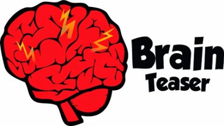

Welcome to Brain Teasers section! Here are a compilation of brain teasers to practice with. Although they may not all relate directly to computer science topics, it is still important that you are able to think outside the box and quickly on your feet when solving problems. One of the most difficult and intimidating parts of coding interviews is not understanding how to approach problems; therefore, hopefully these brain teasers will help out!

2 Eggs
Problem: You have 2 eggs and are in a 100 story building. You want to find the maximum height that you can drop the eggs from using the fewest number of drops. If you drop an egg and it doesn't break, you can reuse it. What is the fewest number of drops
Try solving it before looking at the solution!
Answer: 14. To find the maximum floor that an egg can be dropped from, we can essentially do a linear search starting from the first floor and moving until an egg breaks. However, this gives us a worst case number of drops of 100 if that maximum floor is 100. What most people's minds go to is to use a binary search. However, that does not work: if the max floor is 10, and you drop your first egg at floor 50, then floor 25, you have now used up both of your eggs and did not find the right answer. Instead, let's take a more mathematical approach to this problem. Let's assume the largest number of drops you want to make is X. So we first go to floor X and drop an egg. If it breaks, then we know that the max floor is between 1 and X-1 so we then do a linear search. If it does not break, then we jump X-1 floors and repeat this process. The reason we jump X-1 floor is because we've already used up 1 drop so if need to do a linear search again, we can only do it on X-1 numbers to keep us within our constraint of X floors. By this logic, X + (X-1) + (X-2) + (X-3) + ... +2 + 1 = 100 and if we solve this equation, we get X = 13.6 so we round up to 14.
Measuring Water
Problem: Given unlimited water, a 5-gallon bucket and 3-gallon bucket, how do you measure out exactly 4-gallons.
Try solving it before looking at the solution!
Answer: Fill up the 5 gallon bucket, dump 3 gallons into the 3 gallon bucket. This means that there are 2 gallons remaining in the 5-gallon bucket. Then we dump out the water from the 3 gallon bucket and pour the 2 gallons from the 5 gallon bucket into the 3 gallon bucket, leaving us with nothing in the 5 gallon container and 2 gallons in the 3 gallon container. We then fill up the 5 gallon container and pour until the 3-gallon bucket is full, and it becomes full after pouring exactly 1 gallon. This leaves us with 4 gallons in the 5-gallon container.
Apples and Oranges
Problem: In front of you are 3 boxes, one of all apples, one of all oranges, and one mixed. Normally these are labelled "Apples", "Oranges", and "Mixed", but someone messed up and everything is labelled incorrectly. What is the smallest number of fruits you have to draw to figure out the labels?
Try solving it before looking at the solution!
Answer: 1. The key to solving this brain teaser is that all the labels are wrong. If we draw a fruit from the container labeled "Mixed". If we draw an apple, then we know that container should be labeled "Apples". Then we know that container labeled "Apple" is wrong and should be labeled "Orange" and the one labeled "Orange" should be labeled mixed.
Weighing Pool Balls
Problem: You have N balls of which 1 ball weighs more than the other. How do you find that ball in the least number of weighs given a weighing scale?
Try solving it before looking at the solution!
Answer: You split the balls into 2 groups and weigh them against each other. Which ever group is heavier contains the heavier ball. You continue this process until only 1 ball is left.